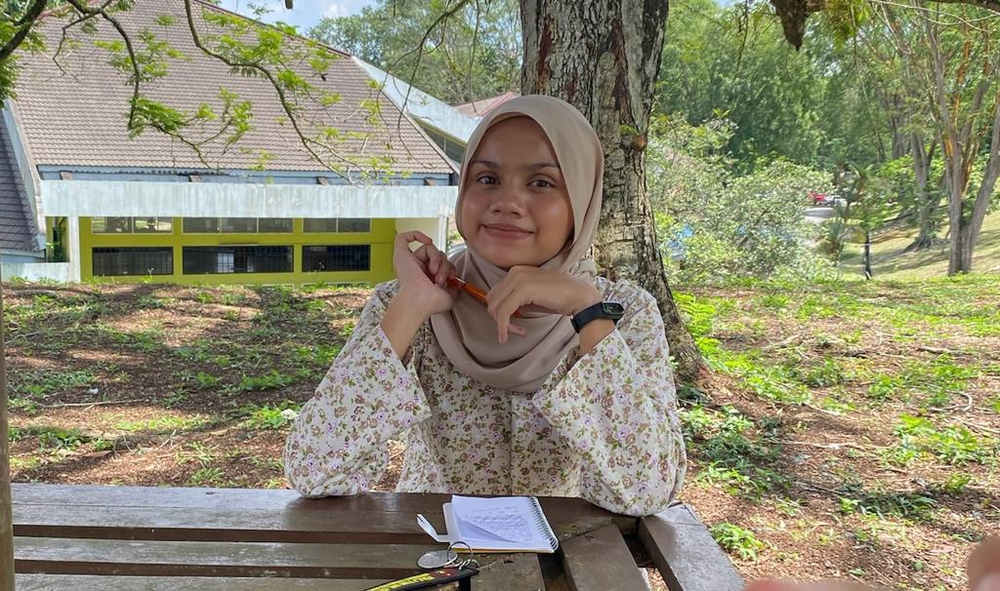

-
FYE Data Engineering
It was a special bonding experience to go on a hiking trip with other first-year data engineering students. Our ability to navigate trails together created a sense of togetherness that strengthened our relationships outside of the classroom. This outdoor experience not only improved our ability to work together as a team but also left us with enduring memories that went beyond the classroom, making our first-year cohort cohesive and supportive.
-
Industrial Talk
After attending various industrial talk by GetMe Hired, PPG employees, alumni, and seniors. There's a lot of things that I've gained for example the interconnection of data, analytics, and system development was highlighted in the career discussion by Miss Qistina. The creative way that Credence used Tableau and PostgreSQL to illustrate the wide range of skills required in the data engineering niche. After receiving this invaluable exposure, I'm more driven than ever to actively look for chances to grow my skills, such classes and workshops, and to welcome obstacles as a necessary step on the path to long-term success in this innovative field.
-
Industry Visit
This industrial visit taught me that one way innovation improves human lives is by making it possible for individuals to use technology to accomplish daily jobs faster than they might have in the past. Technology has an enormous impact on communication. Not to mention, the visit has opened my eyes to new ways that IT advancements are used by smart city projects to improve public services, life management, and wireless infrastructure—all of which may be used as examples of how technology improves the sustainability and standard of living in urban areas.
Welcome to Safiya's portfolio!

Hi there! I'm Safiya Nursyahadah binti Masnoor, and I'm a 20-year-old student pursuing a degree in computer science (data engineering) at the University of Technology Malaysia (UTM). I'm passionate about the various potential that come with technology, which is why I'm determined to learn all about it. The combination of theoretical knowledge and real-world experience at UTM makes it the perfect foundation for my academic research. Whether I'm taking on challenging programming jobs or exploring the ever evolving subject of computer science, my curiosity keeps me going. Selected highlights from my academic path are compiled in my electronic journal, or e-Portfolio. Come along! 💻✨
YEAR 1 SEM 1
DIGITAL LOGIC
The experience of finishing the Digital Electronics course has been life-changing. Throughout the course, a thorough understanding of digital electronics was imparted, covering topics ranging from programmable logic devices to binary representation and Boolean algebra. The practical laboratory exercises, which made use of real circuits and simulator software, improved my understanding of digital electronics' function in a wide range of technical applications. Take a look my assignments by visiting my GitHub.
DISCRETE STRUCTURE
I now have a solid understanding of set theory, relations, functions, recurrence relations, counting techniques, graph theory, trees, and finite automata in the context of computer science thanks to the Principles and Applications of Discrete Structures course. I can now solve computer science problems and analyze answers using recurrence relations and counting techniques by using set theory, relations, and functions. In addition, the course has given me the tools to model electronic devices and solve real-world problems using graph theory, trees, and deterministic finite automata. Take a look my assignments by visiting my GitHub.

TECHNOLOGY INFORMATION & SYSTEM
The introduction to information systems and technology (IS/IT) provided by this course was excellent; it covered networks, communications, hardware, and software. Our practical knowledge of PC installation and productivity tool use came from the hands-on laboratories, which constituted a significant portion of the educational process. Through discussions and trips to the industry visits and talks, we were able to gain a practical understanding of the field and learn about the qualifications needed for various careers. Take a look my assignments by visiting my GitHub.
PROGRAMMING TECHNIQUES 1
This course was essential in providing an organized approach to teaching problem-solving strategies, with a focus on real-world application through C++ programming. Preprocessor directives, control structures, arrays, file operations, pointers, and structured data types were just a few of the many topics we studied. In addition to strengthening theoretical ideas, the practical experience of creating programs improved our capacity to apply newly acquired abilities to solve problems in the actual world. Take a look my assignments by visiting my GitHub.
ANTI-CORRUPTION & INTEGRITY
The Integrity, Synergy, Excellence, and Sustainability (ISES) key values of UTM have been effectively imparted thanks in large part to this course. It underlined how crucial moral principles like integrity are to stopping power abuses, especially when it comes to dealing with corruption. With this understanding, I can now make more constructive contributions to the well-being of society as a whole as well as to my own personal development. Take a look my assignments by visiting my GitHub.